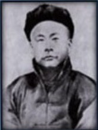

Huo Yuanjia and Nong Jinsun founded the Chin Woo Physical Training Centre in Shanghai in 1910. The centre developed into the Chin Woo Athletic Association, which helped spread the practice of Chinese martial arts and physical education.
The original Chin Woo Sri Lanka family tree records his practice of Mizongyi and names Liu Zhensheng and Chen Gongzhe among his students.